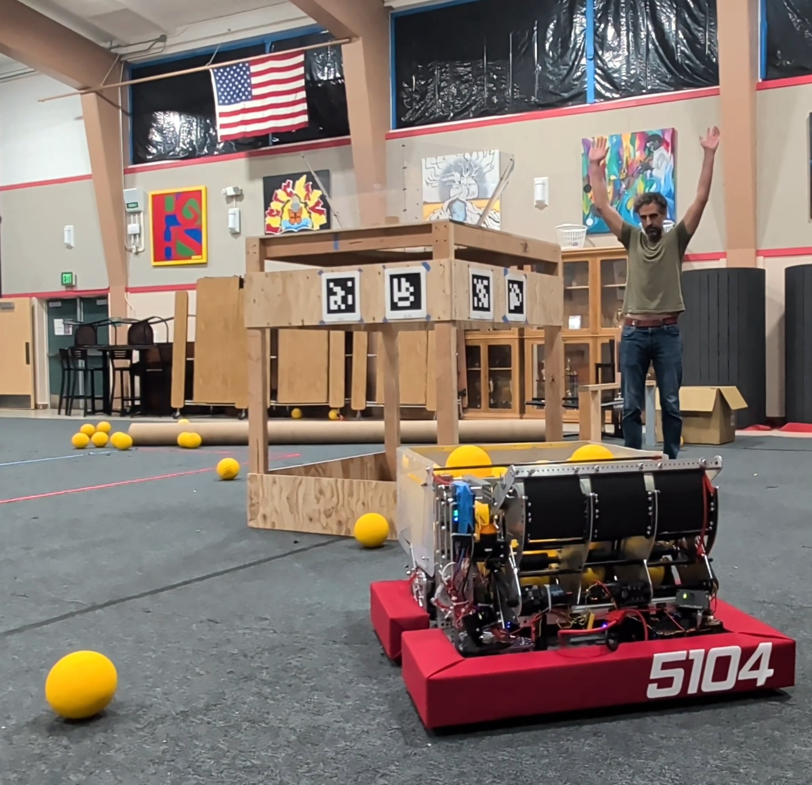

Pacific Grove High School Student, BreakerBots Co-Captain and Manufacturing Lead
About Me
My name is Luna Michael. I am a high school senior and a proud leader of the 5104 BreakerBots FRC team. I am currently pursuing an education in engineering through my high school’s engineering CTE course, and learning some skills in my own time (such as programming this website!).
I specialize in CAD design, CAM and manufacturing, and mechanical work. My CAD program of choice is Fusion, though I also know how to use OnShape at the basic level. I can machine on routers, mills, laser-cutters, and 3D printers. I plan on learning how to machine using a CNC lathe, but for now I am able to use a manual lathe. I also assist my team with assembly, design review and critique, and on-demand repairs during competitions.
As a co-captain of my robotics team, I also have a lot of experience in leadership roles. I am responsible for helping organize events, ensuring subteam collaboration, and guiding members. As manufacturing lead, I will be responsible for managing projects, machinists, and the handoff between CAD, CNC, and mechanical.
Quick Facts
4.13 cumulative GPA - PGHS Senior - CAD Designer and Machinist - Programming in Java and HTML